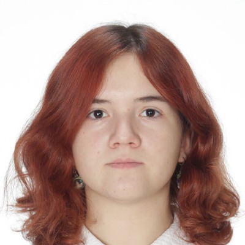

Personal Resume
Last/family name: DROBCA
First name: Tatiana
- Contact address:
- Str.Arbeitergasse 5, 3500 Krems
- Phone/Fax:
- +43 681 81499381
- E-mail:
- 25IMC10117@fh-krems.ac.at

Sex: Female
Date of birth: 02/04/2007
Citizenship: Romania, Moldova
Formal Education
Sept 2022-June2025: IPLT “Alexandr Puşkin”, Chisinau, Moldova
Qualification/Award: Diploma de Bacalaureat (pending July 2025)
Work Experience/Internships/Practical trainings
- 01 October 2024 – 31 May 2025 (official job)
- teacher in the robotics club for elementary grades (2-4) at the lyceum IPLT “Alexandr Puşkin”, Chisinau, Moldova
Language skills
- English: B2
- Romanian: Fluent
- Russian: Fluent
- German: A1
Technical skills & Certifications
| November 2024 | robotics teacher and trainer (direction IT) |
|---|---|
| May 2023 | web developer (school course in web development) |
Extracurricular activities/volunteering
| Sept 2022 – May 2025 | Volunteer at school robotics club |
|---|---|
| Sept 2023 – May 2025 | official member of the Lyceum Council, IPLT “Alexandr Puşkin” |
| March 2023 - May 2023 | official member of the lyceum scientific association of students "Future", IPLT “Alexandr Puşkin" |
Awards & Distinctions (last 3 years)
- 02 March 2024 - 1st Place for scientific project at FIRST LEGO League Challenge Moldova
- 16 March 2024 - 2nd Place for scientific project at FIRST LEGO League Challenge Moldova, Final
- 17 December 2024 - 1st Place at republican competition “Mayor’s cup”, Final
- 17 December 2023 - 2nd Place for web product development at "FutureTech Women" hackathon
- 25 November 2023 - 4th Place at Sumo Bot Challenge Moldova